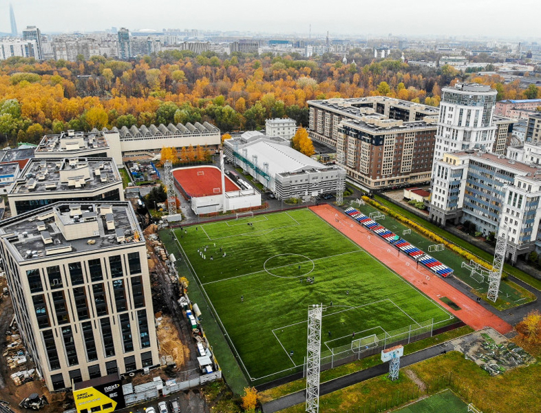

ФК НЕВА
ОФИЦИАЛЬНЫЙ САЙТ
Главная
Команда
Основной состав
Вратари
Шаронов С.
Защитники
Аникиев М.
Вдовиченко Р.
Сапожников Л.
Тарасов П.
Маринин И.
Полузащитники
Аскеров А.
Бусин Р.
Бояренко В.
Павлов В.
Тимофеев Д.
Царевский К.
Нападающие
Михайлов Д.
Путырский А.
Сивохин А.
Цатуров Р.
Матчи
Календарь
Результаты
Таблица
Билеты
Билеты на следующий матч
Winter Cup
Стадион
Клуб
О клубе
Спортивная площадка ЦФКСиЗ Василеостровского района

Общая информация
Название
ЦФКСиЗ Василеостровского района
Адрес
Малый проспект Васильевского острова, 66
Размер поля
100×64 м
Вместимость
750 зрителей
Покрытие
Искусственный газон